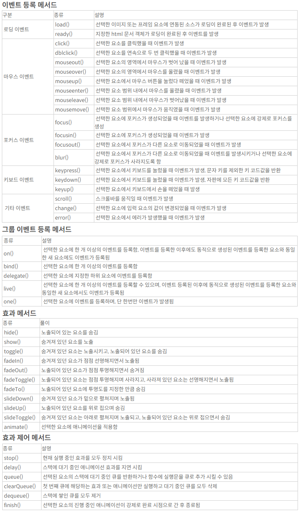
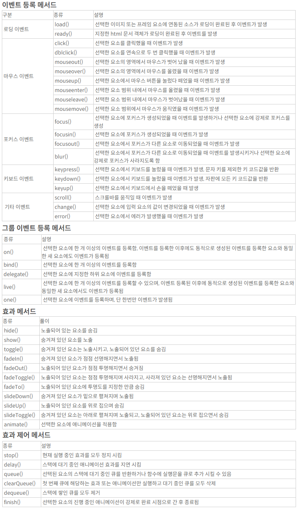

▢ 인벤 : 중범선 증축표 참고링크
▢ 중범선 점진/균형/용맹/비상 수량 정리표 [점진먼저 물교용, 다음목표 용맹]

▢ 중범선 점진/균형 : 일리아 물교퀘 3회로 변경 (라비켈 I,II, 세렌디아 병사)

▢ 중범증축 녹+파템강화 온기,한기 / 중범이후, 토로강화 햇빛달빛, 치로강화 노을스톤
1.온기, 한기스톤 : 중범증축시 녹템과 파템강화. 파템시 온기 35, 한기 80개 준비.
2.햇빛, 달빛스톤 : 온기,한기 10개 + 별빛수정[100주화] 가열하기
[토로강화용!] 온기280, 한기360, 별빛수정66(6천6백) 일단 준비!!
주간퀘3종 온기180, 한기90
어린칸디둠 : 달의 비늘이 새겨진 합판 10, 일반 : 온기14 or 한기7 or 100까주
어린나인샤크 : 달의 핏줄이 새겨진 아마포 3, 일반 : 온기14 or 한기7 or 100까주
어린검무쇠 : 심해의 눈물 1, 일반 : 온기14 or 한기7 or 100까주
: 중범 녹템인 토로장비 강화. 햇빛=200주화, 달빛=300주화 가치!!!
3.토로 강화 햇빛, 달빛 : 4피스 개당 1만 까주. 강화는 햇빛, 달빛
4.치로 강화 노을스톤 : 햇빛, 달빛 1개 + 별빛 가루[노드]10개, 일리야에서 부품공방 제작.
5.치로장비 4부위 ★만들때 토로10강과 맞는 허가증+★ 파트별로 100개씩[총1200개] 다음 3가지 재료가 들어간다.
• 난폭한 파도가 새겨진 합판(350주화)[공작] : 난폭한 해양 괴수의 비늘 1, 바다 악어의 비늘.
• 정교하게 다듬어진 지지대(350주화)[공작] : 난폭한 해양 괴수의 뼈 1, 별빛 강화제(250주화) 1.
• 파도의 흔적이 담긴 접착제(350주화)[간이연금] : 난폭한 해양 괴수의 진액 1, 별빛 유화제(250주화) 1.
350 X 1200 = 42만 주화 치로만드기전에 몇년간 토로 쓸듯!!!, 매일 2000주화 모은다면 210일!!!
6.무역선[녹템10강]과 중범선점진 녹템(토로10강) 비교[무게위주] : 증축시 속도10%, 회전과 가속 5% 증가.
• 무역선 일반무게 : 11500 • 무역선 과적무게 : 19550
중범선점진 녹템(토로10강) 비교[무게위주], 선원300*5:1509 포함 계산
• 중범선 점진 일반무게 : 20900, 2단(800):24개, 3단(900):21개, 4-5단(1000):19개
• 중범선 점진 과적무게 : 35530, 2단(800):42개, 3단(900):37개, 4-5단(1000):34개
▢ 토로 햇빛, 달빛 강화확률 : 9에서 10강할때 32스택에 50% : 부위당 7(28) / 9(36) 정도 [토로강화용!] 온기280, 한기360, 별빛수정66(6천6백) 일단 준비!!
▢ 구축함 파템 온기,한기 강화확률 파템강화시 온기 35, 한기 80개 준비.
온기를 품은 블랙스톤 - 실패시 내구도 5 감소
| 강화 | 비고 | 강제강화 |
|---|---|---|
| +1 | 10스택 60% | 블스5 / 내구15 |
| +2 | 14스택 60% | 블스6 / 내구20 |
| +3 | 20스택 60% | 블스7 / 내구25 |
| +4 | 30스택 60% | 블스10 / 내구35 |
| +5 | 30스택 48% | 블스13 / 내구40 |
한기가 서린 블랙스톤 - 실패시 내구도 10 감소
| 강화 | 비고 | 강제강화 |
|---|---|---|
| +6 | 30스택 40% | 블스23 / 내구100 |
| +7 | 30스택 20% | 블스46 / 내구100 |
| +8 | 30스택 12% | 블스76 / 내구100 |
| +9 | 40스택 10% | 블스115 / 내구100 |
| +10 | 50스택 6% | 블스230 / 내구100 |
▢ 재갱은 설렁설렁하자[스트레스 받음] 화려한 위주로 재갱받고 일갱 까주중심 품목채우기 위주로...
1. 까주런 및 재료교환 후에 4,5단 채워주기 해야하는데 하게 되면
일반재료는 교섭력이 모자라서 못하게되고 가끔 채워주는 형식으로 한다.
[물교품은 1단50 이상유지, 2단 100, 3단 100, 4단 50, 5단 5-10정도 유지]
2. 화려한 2종, 콕스전투, 빛나는 코발트 주괴, 대양의 견고한 현철,
해저 단괴, 심해초줄기, 햇빛달빛스톤(비쌈)
1.
일
형
2.
심
▢ 1.벨리아 출발 준비
1. 에페리아 3종 : 골몬대소, 해카루, 항해경험치
2. 벨리아 나루터지기 : 고등어, 골몬대소, 해카루 항해경험치
벨리아 나루터지기 : 택배(일리아 : 1시간)
벨리아 로비니아 : 택배(틴베라 : 25분) ★출발직전 받기★
벨리아 주점주인 : 굶주린 해양생물, 콕스해적단 처치
벨리아 주점 미아 : 택배(틴베라)
▢ 2.일리아 도착
1. 나루터지기에 일리아 택배 퀘 완료하고, 오킬라아 택배 퀘 수주(1시간)
▢ 3.오킬루아 도착
1. 나루터지기에 오킬 택배 완료하고
2. 나루터지기 퀘3종, 병사 퀘3종 수주
▢ 4.대양 몹 잡고 오킬루아 복귀
1. 나루터지기 퀘3종 완료, 병사 퀘3종 완료
2. 큐리오 쪽으로 가다가 언덕 오르면 말 불러서 큐리오 퀘 2종 완 (산호조각 10, 오색 산호조각 1)
언덕위에 시후람에게 벨리아(선택) 택배퀘 수주받고 ★택배 받기★
황새치 잡았으면 낚시퀘 수주 및 황새치 1개 주고 퀘 완료
▢ 5.벨리아 복귀

▢ 파템제작 순서(증축전에 사용하기 위함) : 1. 함포, 2. 선수상(속도), 3. 돛,장갑은 재료 되는대로.
▢ 파템제작되면 강화 : 1~5단=온기를 품은 블랙스톤(10주화)[2~4단물물교환], 6~10단=한기가 서린 블랙스톤(20주화)[2~4단물물교환] [녹템 강화도 같은거 쓴다]
▢ 무역선(노템), 무역선(녹템10강), 무역선(★파템10강★), 중범선_점진(노템),중범선_점진(녹템10강),중범선_점진(★파템10강★)
▢ 구축함(노템), 구축함(녹템10강), 구축함(★파템10강★), 중범선_용맹(노템),중범선_용맹(녹템10강),중범선_용맹(★파템10강★)
▢ 구축함과 무역선 비교 (중범선 점진, 비상 비교)

▢ 남은 교섭력
▢ 차감후 교섭
물품단계
마고리아
모은재료
위, 배+장비무게, 펫등무게 변경
X 1.7
선원
여유무게
2단(800)
3단(900)
4,5단(천)
▢ 배+장비무게 , 최대적재 , , : , ,
▢ 배+장비무게 , 최대적재 , , : , ,
▢ 나의무게[무역품개수], 첫칸은 무게 , , : , ,
,
,
,
,
,
,
,
,
,
,

중복으로 들어가는 재료
중범선-용맹
심해의 눈물 맞춤?
보유
기록

중범파템용 : 온기 35, 한기 80
토로용 : 온기 280, 한기 360, 치료용 더 많이!!
오킬 주간 온기 60*3=180, 한기 30*3=90 선택
1 [일일]그믐달 길드의 어린 검은무쇠이빨
물교 함포:무게 1000, 장갑:무게 2000, 돛:무게 1000,회전10%,제동10% 선수상:무게 1000,속도12%
부족!! 3 [일일]제 몸 하나는 스스로 지켜야, 점진:함포60,흑장갑60
물교
부족!! 3 [일일]병사 표류추적자, 점진:144 물교할때 2개 나옴, 2회교환!
3 [일일]그믐달 길드의 어린 나인샤크 어른으로 받기!! 물교할때 11개 나옴?
2 [일일]오킬루아 큐리오 산호조각 10개와 교환
부족!! 물교 물교할때 1개 나옴
10 [일일]그믐달 길드의 어린 칸디둠 사냥꾼, 점진:함포200,흑장갑200
1 [일일]일리야 물물교환 퀘스트
2 [일일]일리야 물물교환 퀘스트
부족!! 3 [일일]병사 어린해왕류 물교할때 2개 나옴, 2회교환!
부족!! 물교 물교할때 3개 나옴
부족!! 4 [일일]오색빛 산호조각 교환, 물교할때 1개 나옴 점진 돛 : 80
8 [일일]일리야 물물교환 퀘스트
1 [일일]일리야 물물교환 퀘스트
10 [일일]일리야 물물교환 퀘스트
일반재료
[일일]그믐달 길드의 나인샤크 사냥꾼, 달의 핏줄이 새겨진 아마포 3
[일일]그믐달 길드의 검은무쇠이빨 사냥꾼, 심해의 눈물 1
[일일]너도 좋고, 나도 좋고, 짙은 파도빛이 감도는 규격 각목 3
[물교]화려한 암염 주괴
[물교]화려한 진주 결정
▢ 레마섬과 까마귀 둥지, 온기를 품은 블랙스톤(10주화), 한기가 서린 블랙스톤(20주화)


 
